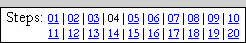
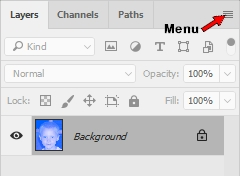
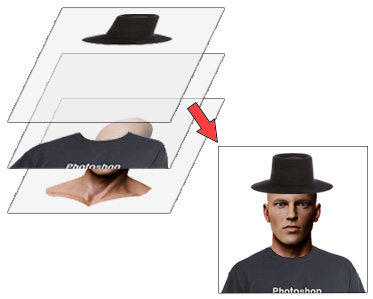
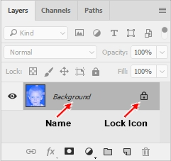
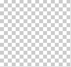
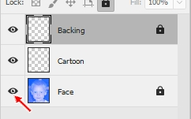

| PART I: YOUR FACE | |
| Step 04: Setting Up the Layers |  |
We are going to take our blue image and begin to draw on top of it with black ink to create our character. When you start to ink this picture, you may want the picture to disappear and reappear at your command to check how it looks without having to delete it. Layers are good for this. Layers are good for many things. Layers are our friends.
There should be a Layers panel like the one shown below on the right side of your Photoshop screen...

If you have deactivated it, it can be called from the Menu Bar.
Keep in mind that any Panel that this project mentions that you do not see can be called by using the first two directions above and choosing the missing Panel name in direction 3.
The basic idea behind layers is that you can have many different elements to the picture you're working on stored on different layers. To help better understand this, imagine a stack of clear plastic sheets with each sheet containing just one piece of an image. For example, the top sheet has a hat, the next sheet has a shirt, and the third sheet has a human head. Since each piece is on its own sheet, we can view each item separately, or if we stack all of the sheets on top of each other...

we see the image of a person wearing a shirt and hat. The beauty of this system is that you can pull out any individual sheet and work only on it without bothering the rest of the sheets - for example, I can pull out the sheet with the shirt on it and make the shirt a different color without changing the other sheets. This is how layers work. Layers can be moved around or turned visible and invisible without impacting other parts of the image. Layers are our friends.
We don't want to make any additional changes to our blue image layer, so let's lock out changes to it. First, notice that our only layer is labeled as Background and has a lock icon next to its name...

This means that the layer is a special kind of layer called a Background layer (now you know why it is named Background). Background layers have several special rules that other layers do not have to follow:
The lock icon generally means that the layer cannot be edited, but notice that the lock in our image above is gray. This is important because it means that while our Background layer has the 4 limitations listed above, it can still be drawn on with color and thus we can still screw it up. We need to convert our Background layer into a regular layer so we can lock it in a way that will not allow it to be edited at all (and thus not allow us to accidentally screw it up).
There is a quick and easy way to turn a locked background layer into a regular layer.
Notice that the layer name is no long in italics. This indicates that our layer is now an ordinary that can be edited any way we want. Let's give our layer a more descriptive name.
Notice that the lock is gone. We are now free to do anything we want to this layer. But remember that we don't want to do anything to it at this point, so let's lock it down.
This black lock indicates that our layer is now locked to editing. We can still do things like move the layer up and down in the layer stack (more on moving layers around later), but we are now unable to to make any changes to the contents of this layer until we turn the lock off. Let's leave the layer locked for now and create the other three layers we will need for this tutorial. We are going to need one layer to draw the main lines of our cartoon (and fill it with color), another to hold the lines we will draw freehand, and a final one to fill in our line color.
Notice that the Cartoon layer is unlocked (this happens automatically, or by default) and is now the active layer, which means if we were to make changes to our image at this point that those changes would only show up on the Cartoon layer.
Always remember that the layer you are working on is the one that is highlighted in gray.
If you ever edit your image and don't see the changes you made, be sure to check what layer you're working with because most actions are only applied to a single layer.
Notice that the layer icons (the tiny pictures between the eye graphic and the layer name in the image above) for both the Cartoon and Backing layers are a tiny checkerboard pattern...

This is Photoshop's way of indicating that something is transparent. In other words, both the Cartoon and Backing layers are empty. In fact, if we turn the visibility of the Face layer off (so that all layers are invisible) we will see that the checkerboard pattern covers our canvas. Take a look at your Layers panel just to the left of the layer name. See the eye? (if you don't, look at the graphic to the right) This allows you to turn the visibility (whether you can see that layer or not) of the layer on and off. If the eye is there then the layer is turned on and you can see it. Clicking the eye to remove it will make that layer invisible. Note that the layer does not vanish completely, it's just invisible. Clicking the eye again will bring it back.
Keep something very important in mind as you work through this project: layers may only be locked if their visibility is set to on. In other words, if you can't see the layer, Photoshop will not let you lock it. If you get to a point where you can't lock a layer, make sure it's visibility is turned on.
In the next step we are going to begin creating the outline of our cartoon face, so let's make a quick adjustment to our layers so that the Cartoon layer, which we will be using in the next 3 steps, is at the top of our layer stack.
We need one additional layer to hold the freehand line we will draw in Step 06.
Notice that the Freehand layer is above the Backing layer, which was the active layer when you inserted the Freehand layer in the last direction. Instead of placing this new layer at the top of the layer stack (above the Cartoon layer), Photoshop inserted it above the currently active layer. This is a default action for Photoshop, so if you want to insert a new layer at the top of your layer stack always be sure you have the topmost layer selected when you insert it.
When we get to Step 06, we will want the Freehand layer to be at the top of the layer stack, so let's go ahead and move it there now. Fortunately for us, there is a quick and easy keyboard shortcut that will move a layer to the top of the stack.
We are now ready to begin Inking our character.
01 | 02 | 03 | 04 | 05 | 06 | 07 | 08 | 09 | 10 | 11 | 12 | 13 | 14 | 15 | 16 | 17 | 18 | 19 | 20